ELO211 Sistemas Digitales
Capítulo 4: Bloques y Métricas
Marie González-Inostroza
Memorias
Memorias

Memorias


Acceso a un dato
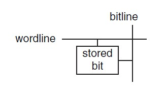Organización de memorias
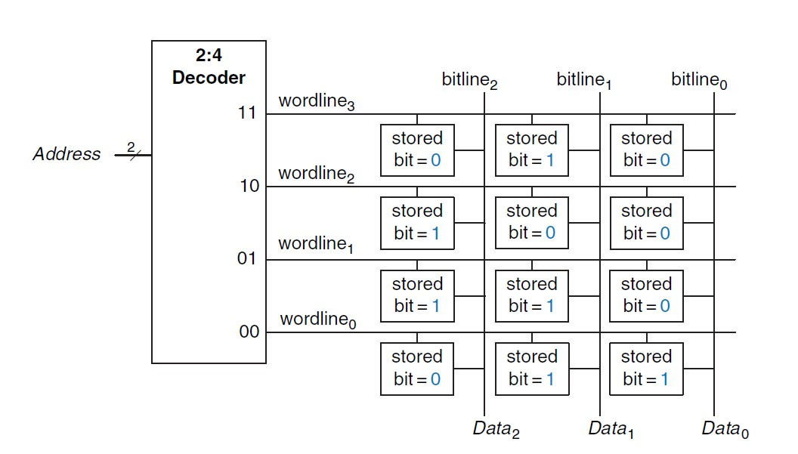Tipos de Memorias
RAM: Random Access Memory
Se puede cambiar la información. Se borran los datos al apagar el sistema.
ROM: Read Only Memory
No se puede cambiar la infomación.Se mantienen los datos al apagar el sistema
Tipos de RAM
SRAM: Static RAM
Guarda el valor hasta que haya un cambio.
DRAM: Dynamic RAM
Se debe refrescar cada vez que se lee.
Tipos de RAM
SRAM: Static RAM
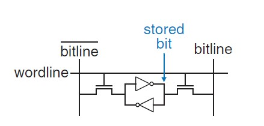DRAM: Dynamic RAM

Comparación
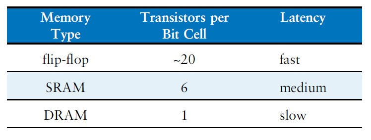Ejemplo de Implementación ROM
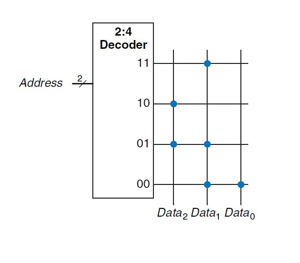EEPROMS: Electrically Erasable Programmable ROMs
Son ROMs hechas para ser reescritas. No se borran al reiniciar el sistema.
LUTs: Look Up Tables
Memorias que implementan alguna lógica.

Métricas de pérformance
Métricas de pérformance
Latencia
Tiempo que tarda un sistema en entregar un resultado luego de recibir una entrada
Rendimiento
Cantidad de resultados por unidad de tiempo
Ejemplo


Ejemplo

Ejemplo
Tenemos un sistema formado por dos circuitos combinacionales CC1 y CC2 entre dos registros. Los tiempos de propagación de los circuitos combinacionales son 5ns y 4ns, respectivamente. Los flipflops tienen tsetup = 0,2ns y tpcq = 0,3ns.
- Determinen el mejor clock a usar
- Determinen la latencia del sistema
- Determinen el rendimiento del sistema
Paralelismo Espacial
Replicar el hardware múltiples veces para obtener más resultados en el mismo tiempo
Ejemplo Paralelismo espacial

Ejemplo
Para aumentar el rendimiento del circuito anterior, se utiliza una estrategia de paralelismo espacial duplicando el circuito 3 veces.
- Determinen la nueva latencia del sistema
- Determinen el nuevo rendimiento del sistema
Paralelismo Temporal (pipeline)
División de una tarea en tareas más pequeñas que se ejecutan simultáneamente.
Ejemplo Paralelismo temporal (Pipeline)
Ejemplo
Para mejorar el rendimiento del circuito anterior, se utiliza una estrategia de paralelismo temporal ubicando un flipflop entre ambas partes combinacionales.
- Determinen el nuevo mejor clock a usar
- Determinen la nueva latencia del sistema
- Determinen el nuevo rendimiento del sistema
Introducción a la microarquitectura
Niveles de abstracción
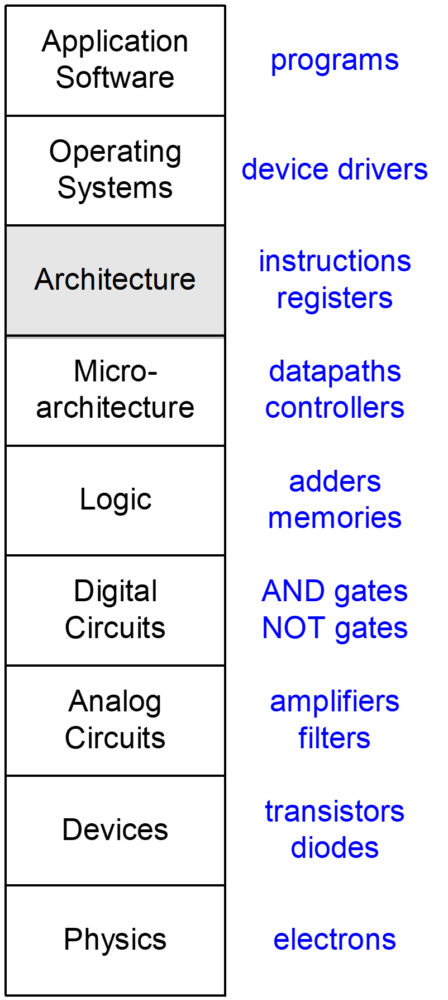Arquitectura
Visión de cómo funciona un computador
Microarquitectura
Cómo implementar una arquitectura en hardware
CPU: Central Processing Unit
Interpreta instrucciones de un código mediante operaciones lógicas y aritméticas.
MIPS: Microprocessor without Interlocked Pipeline Stages
- ALU
- Registros de estado
- PC: Program Counter
- Register file
- Instruction Memory
- Data Memory
- Unidad de Control (CU)
ALU
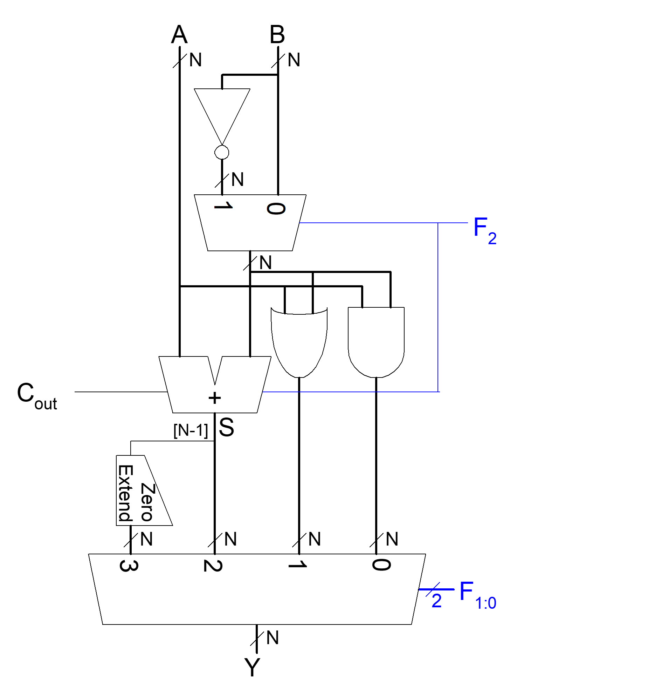ALU
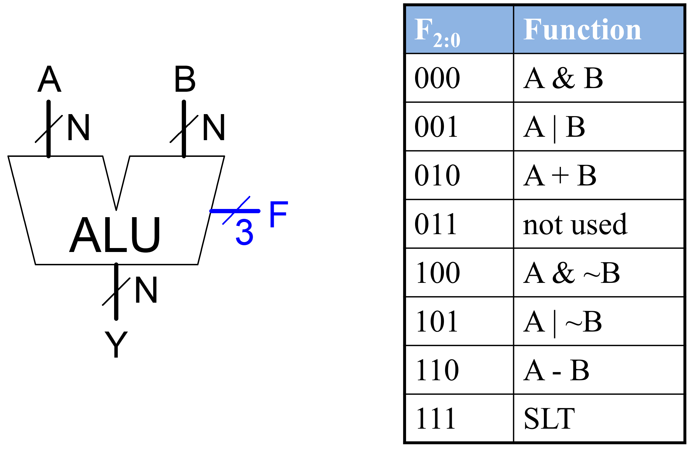Estados en MIPS
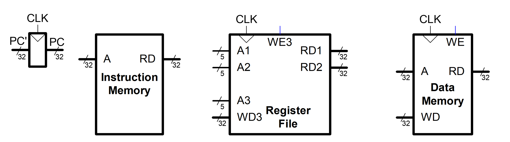Single-Cycle
STEP 1: Fetch instruction
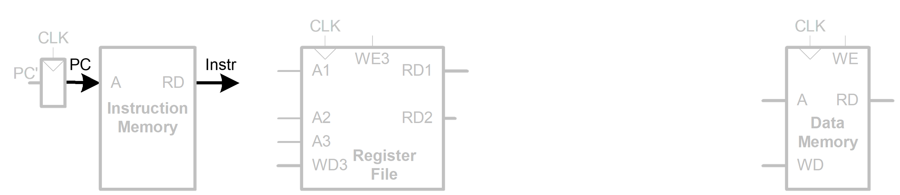Single-Cycle
STEP 2: Read source operands from RF
Single-Cycle
STEP 3: Sign-extend the immediate
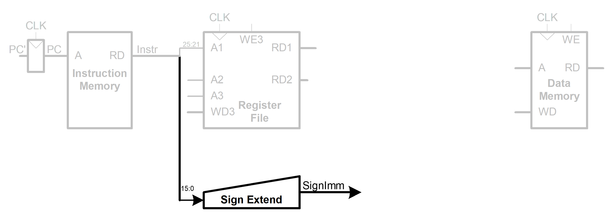Single-Cycle
STEP 4: Compute the memory address
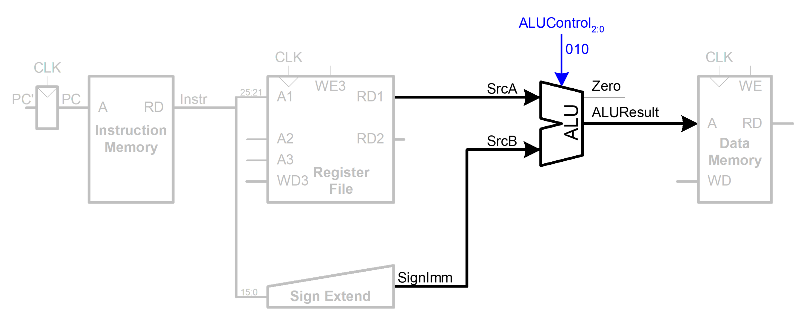Single-Cycle
STEP 5: Read data from memory and write it back to register file
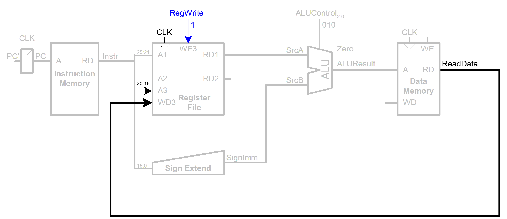Single-Cycle
STEP 6: Determine address of next instruction
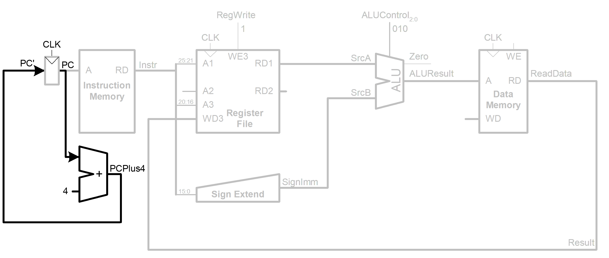Single-Cycle
STEP 7: Determine address of next instruction
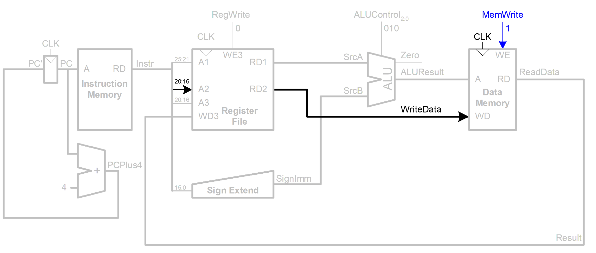Single-Cycle
STEP 8: Write data in rt to memory
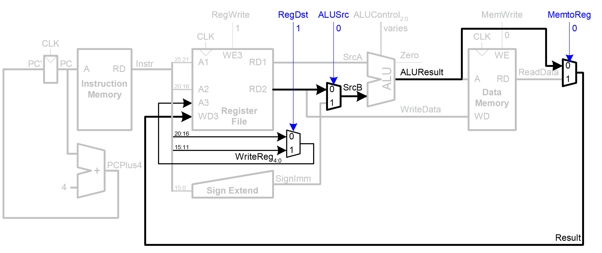Single-Cycle
STEP 9:Write ALUResult to register file
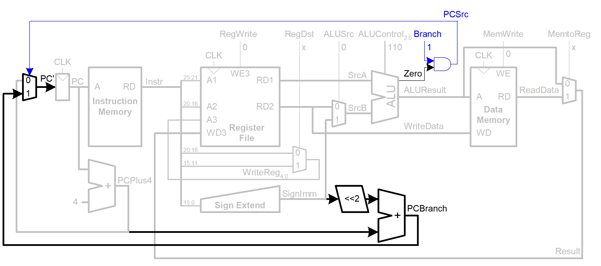Single-Cycle processor
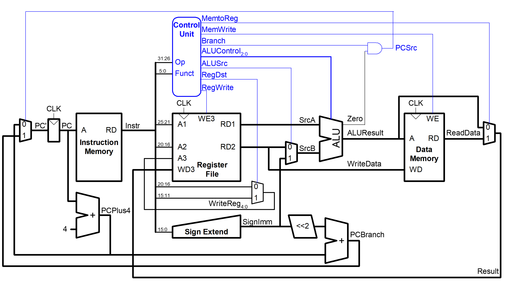Pérformance de un procesador
Execution Time = (#instructions)(cycles/instruction)(seconds/cycle)